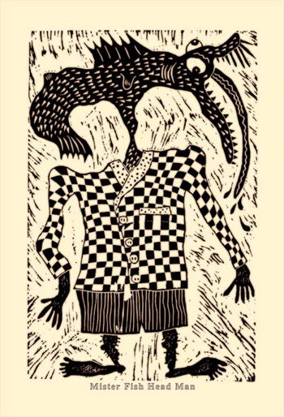

We Shall Entertain You
by R. Nemo Hill

I remember the night preceding this dangerous liaison. Before me I saw a tomb.
I heard a glowworm huge as a house say to me: “I shall entertain you . . .”
(Le Comte de Lautréamont)
The pulpit was a spring-sprung cot that reeked
of all the tortured fluids that had leaked
from raving lunatics, their liquid heavings.
The church — a tabernacle of their foulest grievings,
the Quatrième Fiévreux, Fourth Fever Ward
of Val-de-Grace — its back-house corridor —
nocturnal temple of a splinter sect of mental science,
pews padlocked to insure strict congregational compliance.
The liturgy? Les Chants de Maldoror,
the psalms of the demented troubadour
declaimed each long dark night, till dawn exposed
young poets cloaked in drab night-watchmen’s clothes —
volunteers for late shifts others shunned.
“André! Louis! Enough! The doctors come!”
Surrealists administering nightmares to the damned,
they’d hide their text, salute, and leave — as iron doors were slammed.
Oh, how they thrilled the night that cry arose!
In crippled chorus from behind the rows
of bolted doors they heard the inmates shriek:
“You’re crazy — !”
……………………..“Ahh, the ultimate critique,
one madman to another!” howled André,
reciting scripture now with doubled rage —
while outside the locked ward, the wail of sirens and the din
of a cruel World War’s bursts of cannonfire were closing in.
(Paris—Spring, 1918)
(after Mark Polizzotti)
 |